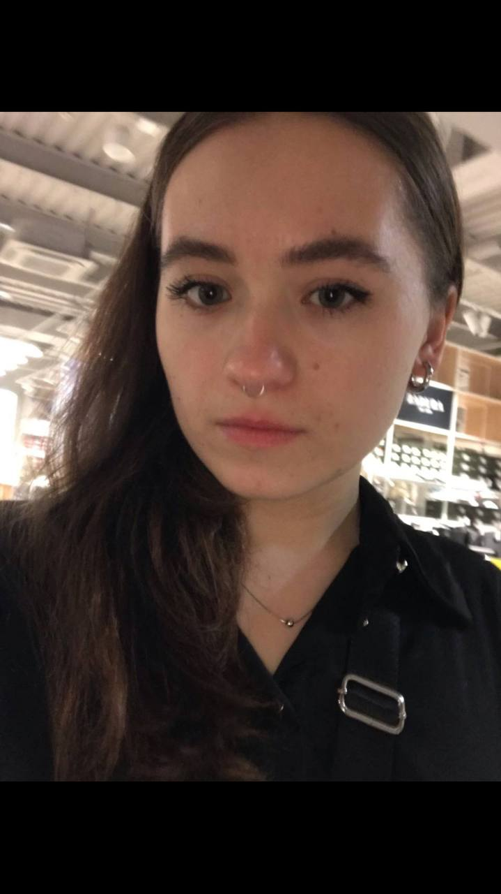
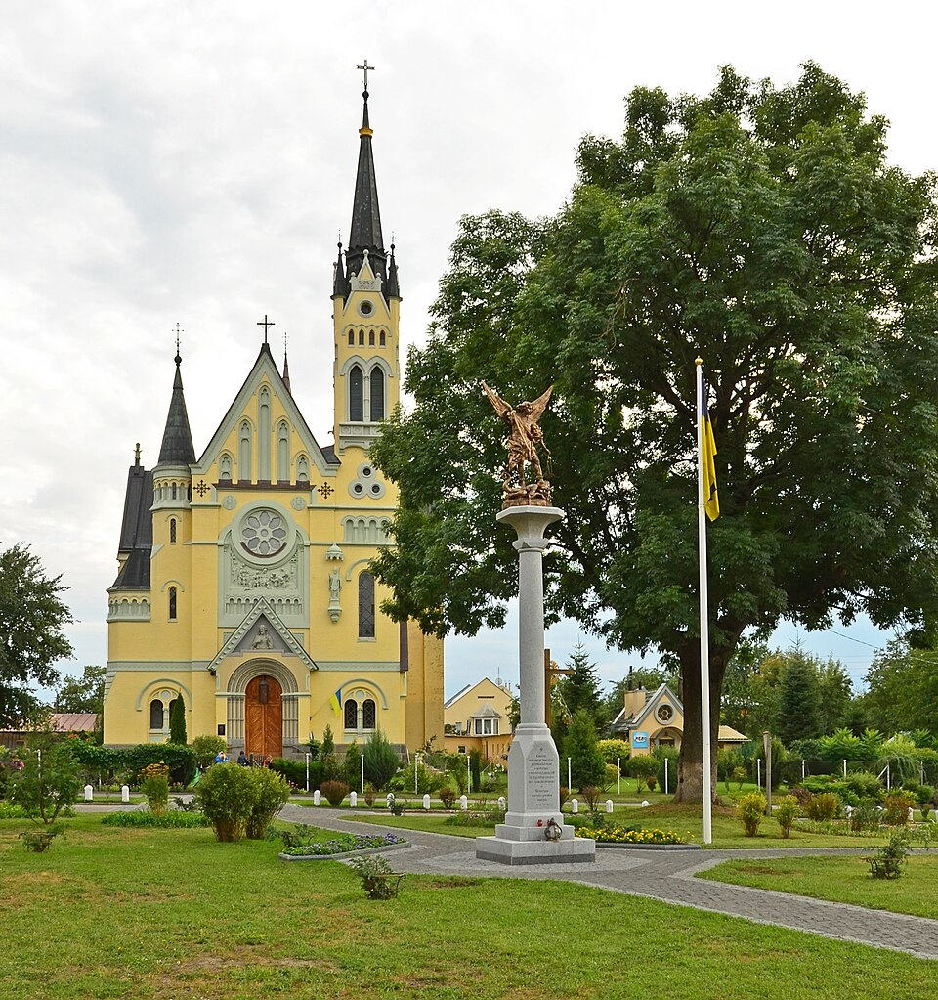
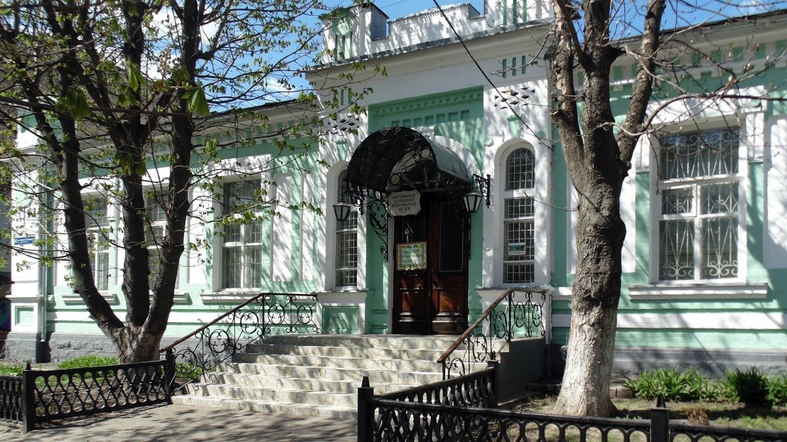
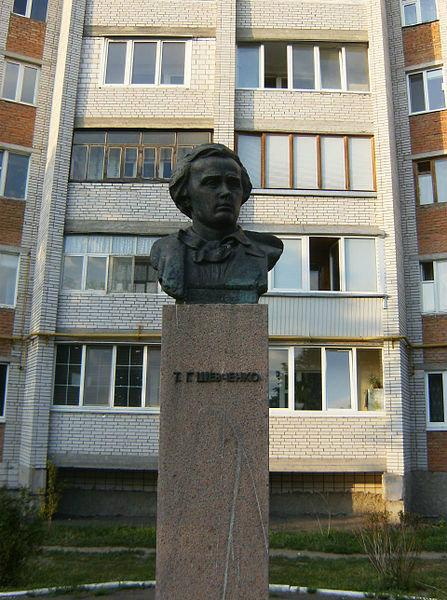
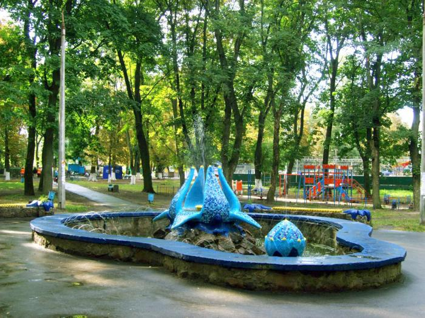

Студентка 3 курсу ІПЗ в ДУІТ. Цікавлюсь психологією, астрономією та програмуванням на C++. Мета: стати full-stack розробником та працювати в міжнародній IT-компанії.
| Рік | Подія |
|---|---|
| 2017 | Закінчила школу — Фастівська ЗОШ №2 |
| 2021 | Закінчила коледж по готельно-ресторанному — КРОК |
| 2023 | Вступила до університету — ДУІТ, спеціальність ІПЗ |
Костел Воздвиження Святого Хреста — парафіяльний костел у місті Фастові на Київщині; оригінальна неоготична пам'ятка, одна з небагатьох історичних, зокрема культових, споруд міста; значний духовний і благодійницький осередок міста.

Фастівський краєзнавчий музей — державний краєзнавчий музей у місті Фастові (районний центр Київської області), значне зібрання матеріалів і предметів з історії, природи, культури і відомих осіб Фастівщини, творів професійного і самодіяльного мистецтва; один з головних осередків культури міста і району. В історичній будівлі — приміщенні колишнього банку (кінець XIX століття).

Пам'ятник Тарасу Шевченку — культурна пам'ятка. Встановлений у 1994 році на розі вулиць Тараса Шевченка та Брандта, ставши визначною культурною пам'яткою міста.

Міський парк імені Юрія Гагаріна — місце відпочинку, розташований у центрі Фастова.
